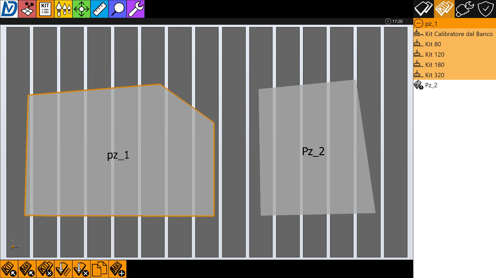
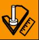
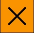
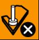

Premendo in alto a destra si passa alla fase di applicazione delle lavorazioni al pezzo. Le modifiche vengono fatte al pezzo selezionato ed è possibile selezionarlo sia premendo sulla figura a centro monitor che sul nome nell’elenco a destra.

Nella lista di destra è possibile espandere la vista dei pezzi per visualizzare i kit applicati su di esso premendo il pulsante “_”. Nel caso non sia stato applicato nessun kit, accanto al nome del pezzo si ha il simbolo “!”.
Pulsanti
Apri lista kit Apre sulla destra la lista di kit per scegliere quelli da applicare al pezzo. Il funzionamento è lo stesso visto nella creazione del materiale
Apri lista materiali Apre sulla destra la lista di materiali per scegliere quelli da applicare al pezzo.
Rimuovi kit Dopo richiesta di conferma, rimuove i kit applicati al pezzo selezionato.

Definizione punti di tastatura Entra nella modalità per definire i punti di tastatura dello spessore sul pezzo selezionato. L’elenco dei punti appare poi sulla destra con la possibilità di vedere le coordinate.

Cancella ultimo punto Cancella l’ultimo punto inserito.

Rimuovi punti di tastatura Dopo richiesta di conferma, cancella tutti i punti di tastatura dal pezzo selezionato.
Duplica kit Copia i kit del pezzo selezionato e attende la selezione del pezzo su cui applicare i kit. Durante l’attesa della selezione il disegno diventa rosso.
Crea materiale Permette la creazione di un materiale partendo dalla sequenza di kit applicati al pezzo selezionato. Si apre una finestra per la scrittura del nome del materiale.